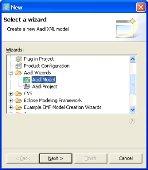
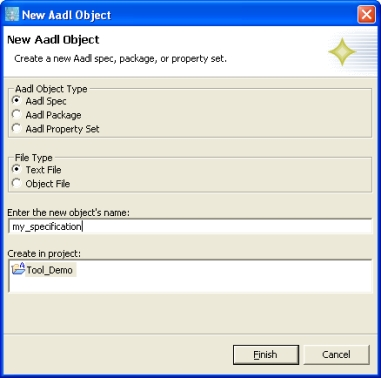

Previous
Next
Previous
Next 
| 4.4 Creating and Editing AADL Models |
AADL models can be maintained as AADL text files or as AADL XML files. These AADL
files can be created within OSATE projects in the AADL text file folder or AADL XML file
folder, respectively. You need to have created a project in the workspace, see Section 4.2.1,
before creating files. In addition, users can create diagram files (extension .aaxldi) for AADL
object models in .aaxl files (see section 8).
AADL models are created using the “Aadl Model” wizard, which can be selected from the
“New Wizard” dialog box, as shown in Figure 9, while AADL diagram files are created
through the Topcased “AADL Diagram” wizard. Th wizards are invoked through the “File”-
>”New”->”Other” command. The Aadl Model wizard, whose dialog box is shown in Figure
10, is used to create new property sets, packages, and specifications, as either AADL text files
or XML model files. Use the radio buttons to select the type of AADL object to create, and
whether to create an AADL text file or AADL XML object file. Enter the name of the file to
create without the “.aadl” or “.aaxl” extension, and select the project in which the file should be
created. If a project is selected when the wizard is launched, then the wizard automatically
selects that project as the target. When “Finish” is selected, the wizard creates the new file in
the appropriate directory based on whether it is text or object file, and whether it is a property
set, package, or specification. The new file is also opened in an appropriate editor.

Figure 9: Selecting the "Aadl Model" wizard.

Figure 10: The "Aadl Model" wizard dialog box.
The AADL Wizards toolbar offers convenient shortcuts for the AADL Wizard: it contains three
buttons for creating a new property set (), package ( ), or specification (). These
actions open the AADL Model wizard with the appropriate model type pre-selected.
), or specification (). These
actions open the AADL Model wizard with the appropriate model type pre-selected.
Existing AADL text files or AADL XML files can be opened in the respective editor by double
clicking on the file in the Navigator. This is the editor the file was opened in last. By default
AADL text files are opened in the AADL Text Editor, and ADL XML file in the AADL
Object Editor. The files can also be opened with a specific editor through the context menu on
the file by selecting “Open with > ” and the select the desired editor. For example, this allows
AADL XML files to be opened as text files, if you want to examine the XML representation.
Note that Eclipse allows you to open a file on only one editor at a time. This means, you have
to close the AADL Object Editor in an AADL XML file before you can open that file in a text
editor to examine the XML as text.
AADL XML files can also be created by converting an AADL text file. This is done by
invoking “OSATE > Generate Aaxl file” on a selected file in the main menu bar, by clicking on
the toolbar button labeled “Generate Aaxl file”, or by selecting “AADL > Generate Aaxl file” in
the context menu.
AADL text files can also be created by converting an AADL XML file into textual AADL. This
is done by invoking “OSATE > Generate Aadl file” on a selected file in the main menu bar, by
clicking on the toolbar button labeled “Generate Aadl file”. AADL text files can also be
created under a different name through the “Save As AADL Text” command.
When an AADL text file is saved and the automatic builder is enabled, the file is automatically
checked for syntax and semantics and converted into XML. Additional analyses can be
invoked explicitly on AADL XML files (see section 8). Be sure to have the “Problems” view
open in order to see any messages from the editors and analysis/generation plug-ins.